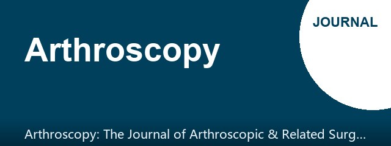
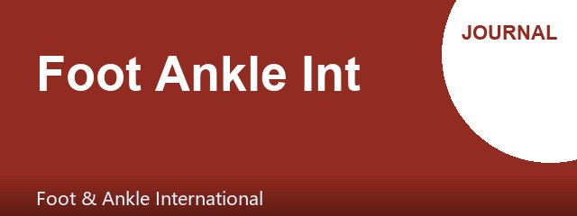
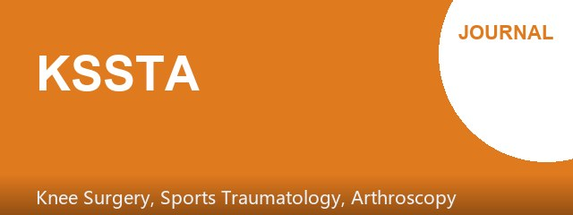

SPORTS MEDICINE & ARTHROSCOPY DIGEST
膝骨关节炎软骨修复：脐带血MSC复合物5年疗效优于微骨折
第 28 期 · 2026-11-03
近 4 天 10 本核心期刊新收录 28 篇 → 精选 14 篇（剔除编辑评论/来信）
本期最值得关注的是脐带血间充质干细胞-透明质酸复合物植入与微骨折治疗膝骨关节炎的5年随访对比：前者在疼痛、WOMAC与IKDC评分上均显著占优，且修复组织更持久，提示生物修复在中长期结构维持上的潜在优势。同期多项研究提示，术前软骨下不全骨折会显著削弱内侧半月板后根修复的临床获益，而髋关节囊修复、盂唇重建等术式细节亦影响愈合与稳定性。对运动医学医生而言，患者选择与术前结构评估的重要性不亚于术式本身。
▍今日主打 · TODAY’S FOCUS
III期试验回顾性子集分析 · II级证据 · 64例 · 5年随访 · Retrospective subset analysis of phase 3 trial · Level II · 64 patients · 5-year follow-up
脐带血MSC-透明质酸复合物5年修复更持久且临床评分优于微骨折
More Durable Cartilage Repair and Better Clinical Outcomes at 5 Years Using Allogeneic Umbilical Cord Blood-Derived Mesenchymal Stem Cells and Hyaluronate Composite Implantation Versus Microfracture for Knee Osteoarthritis.
Arthroscopy · 2026-10-31 · 回顾性子集分析 · PMID 42965407
一句话结论：在Kellgren-Lawrence I-III级膝骨关节炎中，与微骨折相比，异体脐带血MSC-透明质酸复合物植入在5年时VAS（23.4 vs 46.3）、WOMAC（21.8 vs 37.7）与IKDC（59.4 vs 46.5）均显著更优，且MRI修复组织更持久。
要点：48例完成5年随访。复合物组VAS、WOMAC、IKDC均显著优于微骨折组（P分别为0.0019、0.016、0.014）；VAS达MCID比例50.0% vs 28.1%（P=0.123，未达显著）。以MOCART>60且间隔变化<10分定义为持久修复，复合物组比例更高。
对临床的启示：该研究为生物修复在中长期结构与症状维持上提供了对照证据，支持对轻中度膝骨关节炎、希望延迟关节置换的活跃患者考虑MSC复合物植入。但本研究为III期试验的回顾性子集分析，完成5年随访仅48例，存在选择偏倚与样本量限制，MCID差异未达统计学显著，且缺乏组织学验证，结论仍需更大样本前瞻性研究确认。
Conclusion: Allogeneic umbilical cord blood-derived MSC-hyaluronate composite implantation yielded more durable MRI repair tissue and superior 5-year pain and functional scores than microfracture in Kellgren-Lawrence grade I-III knee osteoarthritis.
Key points: Of 48 patients completing 5-year follow-up, the composite group showed significantly better VAS (23.4 vs 46.3), WOMAC (21.8 vs 37.7) and IKDC (59.4 vs 46.5) scores than microfracture; durable repair (MOCART >60 with <10-point interval change) was more frequent, while the MCID achievement difference for VAS (50.0% vs 28.1%) was not statistically significant.
Clinical implications: These findings support MSC-hyaluronate composite implantation as a biologic option for mild-to-moderate knee osteoarthritis in active patients seeking to delay arthroplasty. However, this retrospective subset analysis of a phase 3 trial included only 48 patients at 5 years, carrying selection bias and limited power; the MCID difference was not significant and no histological confirmation was available, so larger prospective studies are needed.
原文 / Source：https://doi.org/10.1002/arj.70706
▍其余 13 篇 · 一屏看完

[膝关节] 术前软骨下不全骨折降低内侧半月板后根修复术临床显著疗效达标率
Preoperative Subchondral Insufficiency Fractures Are Associated With Decreased Clinically Significant Outcome Achievement, Higher Reoperation Rates, and Greater Osteoarthritis Progression After Medial Meniscus Posterior Root Repair at a Minimum 2-Year Follow-Up.
Arthroscopy · PMID 42958723
摘要：目的：评估术前膝关节软骨下不全骨折（SIFK）对内侧半月板后根撕裂修复术疗效的影响。纳入接受孤立性原发性内侧半月板后根撕裂修复术且随访≥2年的患者。收集的数据包括人口学资料、病史、磁共振成像证实的SIFK、后续手术、影像学骨关节炎进展以及患者报告结局指标：膝关节损伤与骨关节炎结局评分-关节置换分量表（KOOS-JR）、国际膝关节文献委员会（IKDC）评分和退伍军人RAND 12项健康调查（VR-12）。按SIFK状态对患者进行分层。采用队列特异性最小临床重要差异（MCID）阈值评估临床显著改善。共纳入91例患者（平均年龄56.5±9.4岁，73.6%为女性；平均体重指数32.5±6.1），随访38.3±15.3个月（范围24-82个月），两组间随访时间无差异（P=0.841）。34例（37.4%）存在SIFK，其中85%为SIFK 1级或2级。两组基线特征无差异。与无SIFK的患者相比，SIFK患者达到KOOS-JR的MCID和患者可接受症状状态（PASS）的比例更低（分别为80.7% vs 38.2%，P<0.001；61.4% vs 35.3%，P=0.028）。SIFK患者后续手术率更高（20.6%[95%置信区间8.7%-37.9%] vs 5.3%[95%置信区间1.1%-14.6%]；风险差15.3%[……
To evaluate the effect of preoperative subchondral insufficiency fracture of the knee (SIFK) on the outcomes of medial meniscus posterior root tear repair. Patients undergoing repair of an isolated primary medial meniscus posterior root tear with ≥2-year follow-up were included. Data encompassed demographics, history, magnetic resonance imaging-confirmed SIFK, subsequent surgery, radiographic osteoarthritis progression, and patient-reported outcome measures: Knee Injury and Osteoarthritis Outcome Score, Joint Replacement; International Knee Documentation Committee; and Veterans RAND 12-Item Health Survey. Patients were stratified by SIFK status. Clinically significant improvement was assessed using cohort-specific minimal clinically important difference thresholds. Ninety-one patients (mean age: 56.5 ± 9.4 years, 73.6% women; mean body mass index: 32.5 ± 6.1) were included with a follow-up of 38.3 ± 15.3 months (range, 24-82), which did not differ between groups (P = .841). Thirty-four patients (37.4%) had SIFK, and 85% had SIFK grade 1 or 2. Baseline characteristics did not differ between groups. Compared with patients without SIFK, those with SIFK showed lower rates of achieving the minimal clinically important difference and patient-acceptable symptom state for Knee Injury and Osteoarthritis Outcome Score, Joint Replacement (80.7% vs 38.2%, P < .001; 61.4% vs 35.3%, P = .028, respectively). Patients with SIFK demonstrated higher rates of subsequent surgery (20.6% [95% confidence interval, 8.7%-37.9%] vs 5.3% [95% confidence interval, 1.1%-14.6%]; risk difference, 15.3% [95% confidence interval, 1.6%-31.9%]; P = .036) and a higher postoperative Kellgren-Lawrence grade (median [interquartile range], 3.0 [3.0-4.0] vs 2.0 [2.0-3.0]; P = .013), with smaller postoperative joint space (2.8 ± 0.6 mm vs 3.8 ± 1.0 mm, P = .002). Preoperative SIFK is associated with lower rates of achieving meaningful clinical improvement along with a higher likelihood of subsequent surgeries and inferior postoperative radiographic osteoarthritis outcomes after medial meniscus posterior root tear repair. Level III, retrospective cohort study.
原文：https://doi.org/10.1002/arj.70712
· · · · ·
[髋关节] 关节囊修复改善髋关节镜术后12个月愈合，良好愈合与更佳早期PRO相关
Capsular Repair Improves 12-Month Healing and Favorable Healing Correlates With Better Early Patient-Reported Outcome Measures in Femoroacetabular Impingement Syndrome Patients Undergoing Hip Arthroscopy.
Arthroscopy · PMID 42958725
摘要：目的：评估关节囊修复对关节囊愈合的影响以及愈合状态对接受髋关节镜手术的股骨髋臼撞击综合征（FAIS）患者早期临床结局的影响。回顾2022年7月至2024年12月期间收集的数据。纳入接受髋关节镜手术并采用髂前上棘间入路关节囊切开术的FAIS患者。排除外侧中心边缘角小于25°、Tönnis分级大于1级、Perthes病、股骨上端骨骺滑脱、股骨头缺血性坏死以及同侧髋关节既往损伤或手术的患者。根据术中是否行关节囊修复将患者分为修复组和非修复组。所有患者均在术后6个月和12个月接受两次随访评估，包括磁共振成像扫描和患者报告结局指标（PROMs）填写。根据磁共振成像上关节囊愈合状态的评估，将患者分为愈合组和未愈合组。PROMs包括改良Harris髋关节评分、髋关节结局评分-日常生活活动亚量表、髋关节结局评分-运动专项亚量表（HOS-SSS）、加州大学洛杉矶分校评分和视觉模拟疼痛评分。所有PROMs均为前瞻性收集。队列共69例患者（73髋），其中非修复组26例（27髋），修复组44例（46髋）。队列包括41例男性和28例女性患者，平均年龄43……
To evaluate the effect of capsular repair on capsular healing and the healing status on early clinical outcomes in femoroacetabular impingement syndrome patients undergoing hip arthroscopy. Data collected between July 2022 and December 2024 were reviewed. Patients with femoroacetabular impingement syndrome who underwent hip arthroscopy with interportal capsulotomies were included. Patients with a lateral center-edge angle of less than 25, Tönnis grade greater than 1, Perthes disease, slipped upper femoral epiphysis, avascular necrosis, and prior ipsilateral hip injury or surgery were excluded. Patients were divided into the Repair Group and the Nonrepair Group based on whether intraoperative capsular repair was performed. All patients underwent 2 postoperative follow-up evaluations at 6 and 12 months postoperatively, which included magnetic resonance imaging scans and completion of patient-reported outcome measures (PROMs). Based on the assessment of capsular healing status on magnetic resonance imaging, patients were divided into the Healed Group and the Unhealed Group. PROMs included the modified Harris Hip Score; Hip Outcome Score-Activities of Daily Living subscale; Hip Outcome Score-Sport-Specific subscale (HOS-SSS); University of California, Los Angeles score; and visual analog scale pain score. All the PROMs were collected prospectively. The cohort comprised 69 patients (73 hips), with 26 patients (27 hips) in the Nonrepair Group and 44 patients (46 hips) in the Repair Group. The cohort comprised 41 male and 28 female patients, and the mean age of the patients was 43.09 years. At 6 months postoperatively, the Repair Group exhibited a higher capsular healing rate, but the difference between the 2 groups was not statistically significant (60.87% vs 44.44%, P = .179). For PROMs, the Healed Group exhibited significantly higher improvements on Hip Outcome Score-Activities of Daily Living (12.91 ± 17.25 vs 3.16 ± 19.91, P = .025) and HOS-SSS (19.09 ± 23.64 vs 4.45 ± 28.97, P = .016) and higher minimal clinically important difference achieving the rate of HOS-SSS (62.50% vs 33.33%, P = .014). At 12 months postoperatively, the Repair Group showed a significantly higher capsule healing rate compared with the Nonrepair Group (76.09% vs 51.85%, P = .038). For PROMs, the Healed Group exhibited significantly higher improvements in HOS-SSS (22.66 ± 22.74 vs 8.64 ± 29.59, P = .035) and a higher rate of achieving the minimal clinically important difference for HOS-SSS (63.27% vs 37.50%, P = .035). Arthroscopic capsular repair significantly improves the 12-month capsular healing rate in patients undergoing hip arthroscopy for femoroacetabular impingement syndrome. Successful capsular healing is associated with better preoperative-to-postoperative improvements in PROMs and higher rates of achieving the minimal clinically important difference, particularly in sports-specific function, and these beneficial effects are more pronounced in female patients. Level III, retrospective case-control study.
原文：https://doi.org/10.1002/arj.70694
· · · · ·
[肩关节] 小圆肌脂肪变性进展与关节镜上关节囊重建术后移植物失败相关
Teres Minor Fatty Degeneration Progression by Magnetic Resonance Imaging Analysis Is Associated With Graft Failure After Arthroscopic Superior Capsule Reconstruction.
Arthroscopy · PMID 42960535
摘要：目的：探讨包括肩袖脂肪变性在内的危险因素与肩胛下肌腱完整或可修复的肩关节在采用阔筋膜自体移植行关节镜上关节囊重建术后1年内移植物失败的关系。回顾性分析2016年6月至2022年12月期间因巨大或不可修复性肩袖撕裂接受关节镜上关节囊重建术且至少随访12个月的患者。影像学评估包括测量肩肱距离以及采用Goutallier分级评估肩袖肌肉脂肪变性。Goutallier分级分为无至轻度（0-1级）和中至重度脂肪浸润（2-4级）。采用Sugaya分级在术后1年磁共振成像上评估移植物完整性，并将患者分为无失败组（I组）和移植物失败组（GF组）。进行单因素和多因素logistic回归分析以确定移植物失败的显著危险因素。共纳入87肩：I组70肩，GF组17肩。平均影像学随访时间（范围）I组为22.2（12-72）个月，GF组为25.5（12-65）个月（P=0.163）。同样，患者报告结局指标随访时间分别为22.3（12-48）个月和22.6（12-47）个月（P=0.839）。GF组显示小圆肌脂肪变性显著更重，中至重度脂肪浸润的患病率更高（58.8% vs 25.7%，P=0.012……
To investigate risk factors, including rotator cuff fatty degeneration, for postoperative graft failure within 1 year after arthroscopic superior capsule reconstruction using a fascia lata autograft in shoulders with an intact or reparable subscapularis tendon. Patients who underwent arthroscopic superior capsule reconstruction for massive or irreparable rotator cuff tears between June 2016 and December 2022, with a minimum 12-month follow-up, were retrospectively reviewed. Radiological evaluations included measurement of acromiohumeral distance and fatty degeneration of the rotator cuff muscles using the Goutallier classification. The Goutallier grades were classified into none-to-mild (grades 0-1) and moderate-to-severe fatty infiltration (grades 2-4). Graft integrity was assessed using the Sugaya classification on postoperative magnetic resonance imaging obtained 1 year after surgery, and patients were categorized into a nonfailure group (Group I) and graft failure group (Group GF). Univariate and multivariate logistic regression analyses were performed to identify the significant risk factors for graft failure. Eighty-seven shoulders were included: 70 in Group I and 17 in Group GF. The mean radiological follow-up (range) was 22.2 (12-72) in Group I versus 25.5 (12-65) months in Group GF (P = .163). Similarly, patient-reported outcome measure follow-up was 22.3 (12-48) versus 22.6 (12-47) months (P = .839). Group GF showed significantly greater fatty degeneration of the teres minor and a higher prevalence of moderate-to-severe fatty infiltration (58.8% vs 25.7%, P = .012). Multivariate logistic regression identified teres minor fatty degeneration and the preoperative acromiohumeral distance as risk factors for graft failure. Clinical outcomes improved significantly in both groups, although the magnitude was lower in Group GF. This study showed that moderate-to-severe fatty degeneration of the teres minor and a smaller preoperative acromiohumeral distance are significant risk factors for graft failure after arthroscopic superior capsule reconstruction in shoulders with an intact or reparable subscapularis tendon. Level III, retrospective cohort study.
原文：https://doi.org/10.1002/arj.70693
· · · · ·
[肩关节] 盂唇软骨损伤范围更大及盂唇覆盖不足与Bankart修复术后影像学骨关节炎相关
Greater Glenoid Chondral Lesion Extent and Lack of Labral Coverage Are Associated With the Development of Radiographic Osteoarthritis After Arthroscopic Bankart Repair.
Arthroscopy · PMID 42960725
摘要：目的：根据盂唇软骨损伤与盂唇裸区的空间关系对其进行分类，并探讨损伤范围、术后覆盖状态与关节镜Bankart修复术后影像学盂肱骨关节炎之间的关联。回顾性纳入2015年至2022年间接受关节镜Bankart修复术的患者。纳入标准为有症状的复发性肩关节前方不稳且完成至少2年随访。所有患者术前均无影像学骨关节炎。通过关节镜根据软骨损伤相对于裸区的前方延伸范围进行分类。定义一条连接裸区与盂3点钟位置的参考线，并在该距离中点作垂线以划分前半部分；局限于该边界内的损伤为1组，超出该边界但仍位于裸区前方的损伤为2组，超出裸区的损伤为3组。评估术后盂唇覆盖状态。影像学骨关节炎定义为Samilson-Prieto分级≥1级。293肩中有165肩（56.3%）存在盂唇软骨损伤。与无损伤者相比，有损伤者年龄更大（P=0.001）、脱位次数更多（P=0.001）、骨性Bankart损伤发生率更高（P=0.001）。修复后，所有1组损伤（n=144）均被修复的盂唇覆盖，而2组中73.3%（n=15）和所有3组（n=6）仍……
To classify glenoid chondral lesions based on their spatial relation to the glenoid bare area and to investigate the association between lesion extent, postoperative coverage status, and radiographic glenohumeral osteoarthritis after arthroscopic Bankart repair. Patients who underwent arthroscopic Bankart repair between 2015 and 2022 were included retrospectively. Patients were eligible if they had symptomatic recurrent anterior shoulder instability and completed at least a 2-year follow-up. All patients had no radiographic osteoarthritis preoperatively. Glenoid chondral lesions were classified by anterior extension relative to the bare area arthroscopically. A reference line was defined connecting the bare area to the 3-o'clock position of the glenoid, and a perpendicular line at the midpoint of this distance was used to demarcate the anterior half; lesions confined within this boundary were classified as group 1, lesions extending beyond this boundary but remaining anterior to the bare area were classified as group 2, and lesions extending beyond the bare area were classified as group 3. Postoperative labral coverage status was assessed. Radiographic osteoarthritis was defined as Samilson-Prieto grade ≥1. Glenoid chondral lesions were present in 165 of 293 shoulders (56.3%). Compared with those without lesions, patients were older (P = .001), had more dislocations (P = .001), and had higher rates of bony Bankart lesions (P = .001). After repair, all group 1 lesions (n = 144) were covered by the repaired labrum, whereas 73.3% of group 2 (n = 15) and all group 3 (n = 6) remained uncovered (P = .001). At a mean follow-up of 27.1 ± 7.6 months (range, 24-47 months), radiographic osteoarthritis developed in 6.9% of group 1, 40.0% of group 2, and 66.7% of group 3 (P = .001). Multivariate analysis showed that older age (P = .005), greater lesion extent (P < .001), and uncovered lesions (P < .001) were independent predictors of radiographic osteoarthritis. The extent of glenoid chondral lesions and lack of postoperative labral coverage were associated with the development of radiographic osteoarthritis after arthroscopic Bankart repair at a minimum of 2-year follow-up. Level III, retrospective cohort study.
原文：https://doi.org/10.1002/arj.70668
· · · · ·
[运动医学] 耐力运动员高碳水策略与外源性酮体：证据导向的临床建议
Fueling the Modern Endurance Athlete: The High-Carbohydrate Revolution, Exogenous Ketones, and an Evidence-Based Approach for the Sports Medicine Clinician.
Sports Health · PMID 42968311
摘要：碳水化合物是长时间、高强度耐力运动的主要限制性燃料，共识指南长期以来将运动期间推荐摄入量上限设定为约90 g/h。两项进展对当代补能实践提出了挑战并加以拓展：精英耐力运动向100至150 g/h碳水化合物摄入量的转变，以及被宣传为促力助剂的外源性酮体补充剂的广泛商业可及性。两者均已超出临床证据范围，并已触及到运动医学临床医生处就诊的竞技和休闲运动员。对截至2026年中期发表的主要代谢与运动表现研究、系统综述、荟萃分析和共识声明进行叙述性综述，通过PubMed和参考文献追溯确定。叙述性综述。证据等级5级。多转运型碳水化合物配方（葡萄糖加果糖）可使外源性碳水化合物氧化超过肠道葡萄糖转运所施加的约1 g/分钟上限，为≥90 g/h的补能速率提供了机制基础。摄入120 g/h可增加外源性碳水化合物氧化，但对照最严格的研究并未证明额外的内源性（肝和肌）糖原节省或一致的性能优势，且胃肠道耐受性需要有意识的肠道训练。对于外源性酮体，一项有影响力的2016年研究报告了底物利用的改变和计时赛成绩的改善。随后的试验以及多项系统综述和荟萃分析未能证实急性促力效应，且若干……
Carbohydrate is the principal limiting fuel for prolonged, high-intensity endurance exercise, and consensus guidelines have long capped recommended intake during exercise at approximately 90 g/h. Two developments have challenged and extended contemporary fueling practice: a shift toward carbohydrate intakes of 100 to 150 g/h in elite endurance sport, and widespread commercial availability of exogenous ketone supplements marketed as ergogenic aids. Both have outpaced the clinical evidence and have reached the competitive and recreational athletes who present to sports medicine clinicians. Narrative review of primary metabolic and performance studies, systematic reviews, meta-analyses, and consensus statements published through mid-2026, identified through PubMed and reference tracing. Narrative review. Level 5. Multiple-transportable-carbohydrate formulations (glucose plus fructose) raise exogenous carbohydrate oxidation above the roughly 1 g/minute ceiling imposed by intestinal glucose transport, providing the mechanistic basis for fueling rates of ≥90 g/h. Ingesting 120 g/h increases exogenous carbohydrate oxidation, but the best-controlled studies have not demonstrated additional endogenous (liver and muscle) glycogen sparing or a consistent performance advantage, and gastrointestinal tolerability requires deliberate gut training. For exogenous ketones, an influential 2016 study reported altered substrate use and improved time-trial performance. Subsequent trials and multiple systematic reviews and meta-analyses have not confirmed an acute ergogenic effect, and several have documented gastrointestinal distress or impaired performance. The more promising and reproducible signal for ketones lies in postexercise recovery and attenuation of overreaching. Finally, athletes who restrict in-competition and training carbohydrate to pursue leanness risk low energy and carbohydrate availability, the substrate of Relative Energy Deficiency in Sport (REDs). Carbohydrate intake of ≤90 g/h, built through progressive gut training, is supported by consensus guidelines and mechanistic evidence for prolonged, high-intensity endurance events; progression toward 120 g/h is reasonable in selected, well-adapted athletes competing in the longest events, with the understanding that a performance benefit >90 g/h remains unproven. Routine exogenous ketone supplementation for acute performance is not supported by current evidence; a recovery-focused application is plausible and increasingly supported but requires further study. Clinicians should frame both strategies within adequate energy availability to protect long-term athlete health.Strength-of-Recommendation Taxonomy (SORT):B.
原文：https://doi.org/10.1177/19417381261499157
· · · · ·
[髋关节] 基线心理韧性与FAIS术后基线心理健康相关，但与疼痛或功能无关
Baseline Resilience Correlates With Baseline Mental Health but Not Baseline Pain or Functional Status in Patients Undergoing Surgery for Femoroacetabular Impingement Syndrome.
Arthroscopy · PMID 42965399
摘要：目的：评估基线心理韧性是否与基线疼痛和功能相关，评估基线心理韧性与心理健康之间的关系，并确定接受髋关节镜手术治疗股骨髋臼撞击综合征的患者基线疼痛和功能的其他预测因素。从前瞻性收集的登记数据库中识别接受髋关节镜手术治疗股骨髋臼撞击综合征的患者。基线结局指标包括10条目Connor-Davidson心理韧性量表、退伍军人RAND 12项心理健康成分评分和身体健康成分评分、髋关节残疾与骨关节炎结局评分-疼痛亚量表（HOOS-Pain）、髋关节残疾与骨关节炎结局评分-身体功能简表（HOOS-PS）以及加州大学洛杉矶分校活动评分。采用多变量线性回归对基线HOOS-Pain和HOOS-PS建模，同时评估基线心理韧性评分的相对贡献。共纳入300例患者，中位年龄32岁（四分位距20-43），71.7%为女性。基线10条目Connor-Davidson心理韧性量表与基线HOOS-Pain或HOOS-PS无显著关联。基线心理韧性与通过退伍军人RAND 12项心理健康成分评分测量的基线心理健康呈中等强度相关（Pearson相关系数0.55[0.47, 0.62]）。性别（P<0.001）、体重指数（P=0.049）、教育水平（P=0.022）和基线退伍军人RAND 12项身体健康成分评分（P<0.001）与基线HOOS-Pain显著相关……
To evaluate whether baseline resilience correlates with baseline pain and function, assess the relation between baseline resilience and mental health, and identify additional predictors of baseline pain and function in patients undergoing hip arthroscopy for femoroacetabular impingement syndrome. Patients undergoing hip arthroscopy for femoroacetabular impingement syndrome were identified within a prospectively collected registry database. Baseline outcome measures included the 10-item Connor-Davidson Resilience Scale, Veterans RAND 12-Item Mental Component Score and Physical Component Score, Hip Disability and Osteoarthritis Outcome Score-Pain Subscale (HOOS-Pain), Hip Disability and Osteoarthritis Outcome Score-Physical Function Short Form (HOOS-PS), and University of California, Los Angeles Activity Score. Multivariable linear regressions were used to model baseline HOOS-Pain and HOOS-PS while assessing the relative contribution of baseline resilience score. A total of 300 patients were included with a median age of 32 years (interquartile range 20-43) and 71.7% were women. Baseline 10-item Connor-Davidson Resilience Scale was not significantly associated with baseline HOOS-Pain or HOOS-PS. Baseline resilience had a moderately strong correlation with baseline mental health as measured via the Veterans RAND 12-Item Mental Component Score (Pearson correlation 0.55 [0.47, 0.62]). Sex (P < .001), body mass index (P = .049), education level (P = .022), and baseline Veterans RAND 12-Item Physical Component Score (P < .001) were significantly associated with baseline HOOS-Pain scores. Sex (P = .016), education level (P = .007), history of prior surgery (P = .043), and Veterans RAND 12-Item Physical Component Score (P < .001) were significantly associated with baseline HOOS-PS scores. Baseline resilience (10-item Connor-Davidson Resilience Scale) was not found to be associated with baseline pain or hip-related physical function. Baseline resilience scores had a moderately strong correlation with mental health. Physical health status and function, sex, years of education, and body mass index were the strongest predictors of baseline pain, whereas physical health status and function, years of education, sex, and prior surgery were the strongest predictors of baseline hip-related physical function. Level III, retrospective cohort study.
原文：https://doi.org/10.1002/arj.70678
· · · · ·
[髋关节] 盂唇移植增容与股骨侧填充术改善过度Cam切除后髋关节牵张稳定性：羊模型研究
Labral Graft Volume Augmentation and Femoral Remplissage Have Positive Impact on Hip Distraction Stability After Excessive Cam Resection: An Ovine Model.
Arthroscopy · PMID 42958653
摘要：目的：在羊模型中从生物力学角度评估股骨侧填充术（femoral remplissage）与盂唇体积增容单独及联合应用对过度Cam切除后恢复髋关节牵张稳定性的作用。方法：48个新鲜冷冻羊髋关节随机分为6组（每组n=8）：（1）填充术组；（2）基线盂唇重建组；（3）基线重建联合组；（4）厚度增加（2倍）组；（5）联合增容（2倍+填充术）组；（6）过度增厚（4倍）组。在股骨头颈交界前上区制造10%过度切除缺损。自体肌腱移植物以2.0 mm钛锚钉固定。于屈髋90°、200 N载荷、60 mm/min条件下行牵张测试。吸引密封强度定义为股骨头分离过程中的峰值阻力（N）。计算两个参数：Δ1（术后-完整）代表残余丢失，Δ2（术后-切除后）代表稳定性恢复。统计分析采用Kruskal-Wallis检验及Bonferroni校正的Mann-Whitney U检验（P<.003）。结果：过度Cam切除显著降低吸引密封强度（P<.001）。4倍重建组与2倍+填充术组获得最佳稳定性恢复（4倍组：Δ1=0.78 N，Δ2=24.06 N；2倍+填充术组：Δ1=4.53 N，Δ2=23.12 N；与基线组相比均P<.003）。单纯填充术提供部分恢复，而基线重建组表现最弱（Δ1=11.48 N，Δ2=14.92 N）。增加移植物厚度可改善Δ1与Δ2，且与更大的稳定性恢复相关。标准盂唇重建单独应用未能完全恢复吸引密封强度。
To biomechanically assess the effects of femoral remplissage and labral volume augmentation, individually and in combination, on restoring hip distraction stability after excessive cam resection in an ovine model. Forty-eight fresh-frozen ovine hips were randomized into 6 groups (n = 8): (1) remplissage, (2) baseline labral reconstruction, (3) combined baseline reconstruction, (4) increased thickness (2×), (5) combined augmented (2× + remplissage), and (6) excessive thickness (4×). A 10% over-resection defect was created at the anterosuperior head-neck junction. Autologous tendon grafts were fixed with 2.0 mm titanium anchors. Distraction testing at 90° flexion was performed under a 200 N load at 60 mm/min. Suction seal strength was defined as the peak resistance force (N) during femoral head separation. Two parameters were calculated: Δ1 (Postop-Intact) for residual loss and Δ2 (Postop-Excised) for stability recovery. Statistical analysis used Kruskal-Wallis and Bonferroni-corrected Mann-Whitney U tests (P < .003). Excessive cam resection significantly reduced suction seal strength (P < .001). The 4× reconstruction and 2× + remplissage groups achieved the best stability restoration (4×: Δ1 = 0.78 N, Δ2 = 24.06 N; 2× + remplissage: Δ1 = 4.53 N, Δ2 = 23.12 N; both P < .003 vs baseline). Remplissage alone provided partial recovery, whereas baseline reconstruction had the weakest performance (Δ1 = 11.48 N, Δ2 = 14.92 N). Increasing graft thickness improved both Δ1 and Δ2, correlating with greater stability recovery. Standard labral reconstruction alone did not fully restore suction seal strength after excessive cam resection. Increasing graft volume improved distractive stability compared with the resected state, and combined 2× labral augmentation with femoral remplissage achieved stability restoration comparable to the 4× reconstruction group. Remplissage alone provided partial recovery but did not consistently restore intact-level stability. These findings suggest that increased graft thickness and femoral remplissage may improve distractive stability in an ex vivo over-resection model.
原文：https://doi.org/10.1002/arj.70679
· · · · ·

[踝足] 四踝及四踝等效踝关节骨折的手术治疗：基于组成成分固定后的影像学与临床结局
Operative Treatment of Quadrimalleolar and Quadrimalleolar-Equivalent Ankle Fractures: Radiographic and Clinical Outcomes Following Component-Based Operative Fixation.
Foot Ankle Int · PMID 42958745
摘要：四踝（QM）及四踝等效（QME）骨折在三踝概念基础上增加了前方骨性下胫腓联合成分（Chaput或Wagstaffe骨折块），从而扩展了三踝骨折的概念。手术固定后的结局仍未被充分界定。我们回顾性分析了2019年4月至2024年12月间连续接受切开复位内固定治疗的36例患者（18例QM，18例QME），随访至少12个月。所有患者均接受基于组成成分的手术治疗策略，包括术前CT对每个踝部及下胫腓联合成分进行特征描述、根据形态学处理前方骨折块，以及术中关节镜下评估残余不稳定。下胫腓联合复位情况在双侧CT上于胫骨穹窿近端1 cm处评估，采用直接前后差异、腓骨平移及腓骨旋转，并以对侧踝为参照。临床结局包括Olerud-Molander踝关节评分（OMAS）和视觉模拟量表（VAS）。两组基线人口学特征无显著差异。QME损伤以旋后外旋（SER）IV型/Weber B为主（94.4%），而QM在SER与旋前外旋（PER）之间以及Weber B与C之间分布均匀（P=.01）。术后1年两组4项参数均未观察到显著的左右侧差异（均P>.05）；鉴于样本量有限，这些无显著差异的结果可能存在II类错误。组内与组间观察者信度均极佳。
Quadrimalleolar (QM) and quadrimalleolar-equivalent (QME) fractures expand the trimalleolar concept by adding an anterior osseous syndesmotic component (Chaput or Wagstaffe fragment). Outcomes after operative fixation remain incompletely defined. We retrospectively reviewed 36 consecutive patients (18 QM, 18 QME) who underwent open reduction and internal fixation between April 2019 and December 2024, with a minimum 12-month follow-up. All patients underwent a component-based operative treatment strategy comprising preoperative computed tomographic (CT) characterization of each malleolar and syndesmotic component, morphology-based management of anterior fragments, and intraoperative arthroscopic assessment of residual instability. Syndesmotic reduction was assessed on bilateral CT 1 cm proximal to the plafond using direct anterior and posterior differences, fibular translation, and fibular rotation, referenced to the contralateral ankle. Clinical outcomes included Olerud-Molander Ankle Score (OMAS) and visual analog scale (VAS). Baseline demographics did not differ significantly between groups. QME injuries were predominantly SER (supination-external rotation) type IV/Weber B (94.4%), whereas QM showed an even distribution between SER and PER (pronation-external rotation) and between Weber B and C (P = .01). No significant side-to-side differences were observed in any of the 4 parameters in either group at 1 year (all P > .05); given the limited sample size, these nonsignificant findings may be subject to a type II error. Intra- and interobserver reliabilities were excellent (intraclass correlation coefficient 0.901-0.988). Mean OMAS improved to 86.1 ± 6.8 (QM) and 85.3 ± 5.7 (QME); VAS decreased to 1.0 ± 0.7 in both (within-group P < .001; between-group P = .82). All fractures united; 3 minor wound complications resolved with local care. A component-based operative treatment strategy was safe and associated with maintained anatomic distal tibiofibular alignment and favorable short-term outcomes in both QM and QME. The absence of a control group precludes conclusions on clinical necessity or superiority, and combined evaluation of these biomechanically distinct patterns should be interpreted with caution. Level IV, retrospective comparative case series.
原文：https://doi.org/10.1177/10711007261496226
· · · · ·
[踝足] 全踝关节置换术中计算机辅助导航的准确性：基于CT的短期报告
Accuracy of Computer-Assisted Navigation in Total Ankle Arthroplasty Surgery Using Computed Tomography: A Short Report.
Foot Ankle Int · PMID 42960558
摘要：计算机辅助导航（CAN）在全踝关节置换术（TAA）中提供动态术中引导。尽管实验室数据提示其精度更优，但缺乏体内证据。本研究采用负重CT（WBCT）评估CAN下TAA术后假体位置相对于计划的准确性。我们假设绝对偏差<3 mm或<3°。连续13例患者（2024年11月至2025年11月）接受CAN辅助TAA。术前基于CT的3D模型用于模板规划。术后WBCT扫描用于测量最终假体安放位置，并通过计算机化测量识别假体放置偏差。我们分析了计划位置与术后最终位置之间的绝对偏差。胫骨侧绝对偏差在内翻/外翻（1.65°±1.43°）、后倾角（1.87°±1.34°）和截骨高度（0.68±0.62 mm）方面处于期望范围内，但轴向旋转（3.97±2.64）未达期望范围。距骨侧内翻/外翻（2.93°±1.86°）和截骨高度（0.66±0.71 mm）绝对偏差处于期望范围内。最终位置中距骨后倾角偏差增大（3.90±2.89），可能归因于非导航下的假体打压安放。尽管胫骨旋转对线和距骨定位仍存在偏差，但各测量值变异性较低，提示CAN可能有助于实现准确的假体定位。这些短期定位准确性结果支持CAN作为提高TAA假体定位可重复性的潜在工具。证据等级IV级，病例系列。
Computer-assisted navigation (CAN) offers dynamic intraoperative guidance in total ankle arthroplasty (TAA). Although laboratory data suggest superior precision, in vivo evidence is lacking. This study used weightbearing computed tomography (WBCT) to evaluate CAN accuracy of postoperative TAA implant position relative to the plan. We hypothesized that absolute discrepancies would be <3 mm or <3°. Thirteen consecutive patients (November 2024-November 2025) underwent TAA using CAN. Preoperative computed tomography-based 3D models were used for templating. Postoperative WBCT scans were used to measure final implant seating, and computerized measurements were used to identify implant placement discrepancy. We analyzed absolute discrepancies between planned vs final postoperative positions. Tibial absolute discrepancies were within desired limits for varus/valgus (1.65° ± 1.43°), slope (1.87° ± 1.34°), and cut height (0.68 ± 0.62 mm) but not for axial rotation (3.97 ± 2.64). For the talus, varus/valgus (2.93° ± 1.86°) and cut height (0.66 ± 0.71 mm) absolute discrepancies were within desired limits. The increased talar slope deviation (3.90 ± 2.89) in the final position may be due to non-navigated implant impaction. Although discrepancies persisted in tibial rotational alignment and talar positioning, the low variability across measurements suggests that CAN may support accurate implant positioning. These short-term positioning accuracy findings support the utility of CAN as a potential tool for enhancing implant positioning reproducibility in TAA. Level IV, case series.
原文：https://doi.org/10.1177/10711007261497273
· · · · ·
[踝足] Lambrinudi型关节融合联合跖筋膜切除术治疗僵硬性高弓内翻畸形
Lambrinudi-Type Arthrodesis and Plantar Fasciectomy in the Treatment of Rigid Cavovarus Deformity.
Foot Ankle Int · PMID 42969295
摘要：在采用标准三关节融合术治疗僵硬性高弓内翻畸形时，距骨常保持背伸位，导致前方踝关节撞击和过载。本研究的主要目的是检验我们的假设：Lambrinudi型三关节融合术后距骨将处于更正常的屈曲位置，且联合跖筋膜切除术可使足部形态更趋正常。此外，旨在评估神经源性足与非神经源性足的结局是否存在差异。纳入2016年至2023年在本机构接受Lambrinudi型关节融合联合跖筋膜切除术、随访至少2年的17例患者（17足；神经源性[N]11足；非神经源性[NN]6足）。我们前瞻性收集影像学与临床数据以评估足踝形态变化。就现有样本量而言，N组与NN组临床结局未检出显著差异。术后VAS评分下降6.5±0.3分（P<.0001，Hedges g=6.6[4.9-8.4]），EFAS评分提高31.5±0.9分（P<.0001，Hedges g=-8.7[-10.9至-6.5]）。所有影像学测量均显著改善（均P<.0001），且就现有样本量而言，除距骨屈曲角在N组下降幅度略大于NN组外（P=.024，Hedges g=-0.8[-1.5至-0.1]），两组间未检出显著差异。足长由术前122±16 mm增加。
While using a standard triple arthrodesis in treating rigid cavovarus deformity, the talus often remains extended, leading to anterior ankle impingement and overload. The primary goal of this study was to test our hypotheses that the talus would adopt a more normal flexion position with a Lambrinudi-type triple arthrodesis and that the foot morphology would become more normal by combining it with a plantar fasciectomy. Additionally, the aim was to evaluate whether outcomes differ between neurogenic and non-neurogenic feet. Seventeen patients (17 feet; neurogenic [N], 11 feet; non-neurogenic [NN], 6 feet) who underwent a Lambrinudi-type arthrodesis combined with a plantar fasciectomy at our institution from 2016 to 2023, with at least 2 years of follow-up, were included. We prospectively collected radiographic and clinical data to evaluate changes in foot and ankle morphology. With the numbers available, no significant difference could be detected between the N and NN groups in clinical outcomes. The VAS scale decreased by 6.5 ± 0.3 points after surgery (P < .0001, Hedges g = 6.6 [4.9-8.4]), and the EFAS score increased by 31.5 ± 0.9 points (P < .0001, Hedges g = -8.7 [-10.9 to -6.5]). All radiographic measurements improved significantly (P < .0001 for all), and, with the numbers available, no significant difference could be detected between the 2 groups, except for the talar flexion angle, which showed a tendency of a slightly higher decrease in the N group than in the NN group (P = .024, Hedges g = -0.8 [-1.5 to -0.1]). The foot length increased from 122 ± 16 mm preoperatively to 134 ± 12 mm postoperatively (plus 10.1%, P < .0001, Hedges g = -0.9 [-1.5 to -0.2]). A Lambrinudi-type arthrodesis combined with a complete plantar fasciectomy was an effective method for correcting a rigid cavovarus deformity in both N and NN feet. It was intended to unload the anterior tibiotalar joint by flexing the talus and changing the flexion forces, and it increased foot length by 10.1%. It also was associated with significant clinical improvements across all measured outcome domains. Level IV, prospective case series.
原文：https://doi.org/10.1177/10711007261491305
· · · · ·
[肩关节] 评论：有结与无结固定对肱二头肌长头腱固定术成功是否真正重要？或许并非如此
Editorial Commentary: Does a Knotted Versus Knotless Repair Really Matter for a Successful Long Head Biceps Tenodesis? Perhaps Not.
Arthroscopy · PMID 42970241
摘要：肱二头肌长头腱固定术是治疗肱二头肌-盂唇复合体病变的常用手术，也常与肩袖修复联合进行。一项对近期发表的生物力学研究的系统综述得出结论：以极限失败载荷衡量，有结肱二头肌固定构型的固定强度略高于无结构型。然而，肩关节外科医生在选择适合患者的最佳手术技术时，需要考虑其他更具临床相关性的因素，包括在结节间沟内的位置、关节镜或开放、onlay或inlay、以及植入物或无植入物的选择。此外，康复与手术本身同样重要，制动时长、康复节奏以及患者整体依从性也是最终结果的重要决定因素。
Biceps tenodesis is a commonly performed surgery to treat biceps labrum complex pathology and in conjunction with rotator cuff repair. A systematic review of recently published biomechanical studies concluded that knotted biceps tenodesis constructs had a slightly higher strength of fixation, as measured by ultimate failure load, than knotless constructs. However, the shoulder surgeon needs to consider other more clinically relevant factors in selecting the best surgical technique for their patient including location within the groove, arthroscopic or open, onlay or inlay, and choice of implant or no implant. Additionally, the recovery is just as important as the surgery, and duration of immobilization, rehabilitation cadence, and overall patient compliance are also important determinants of the end result.
原文：https://doi.org/10.1002/arj.70770
· · · · ·

[膝关节] 重新审视全膝关节置换术后早期关节源性肌肉抑制
Rethinking early arthrogenic muscle inhibition after total knee arthroplasty.
Knee Surg Sports Traumatol Arthrosc · PMID 42960630
摘要：我们饶有兴趣地阅读了Barrera Uso等关于全膝关节置换术（TKA）后早期关节源性肌肉抑制（AMI）的近期文章。该研究提供了具有临床相关性的证据，即术后30天的AMI强烈预测60天时的持续存在。然而我们认为，这一发现应被解释为一种预后关联，而非证明30天AMI是后续抑制的主要生物学决定因素。我们还讨论了术后评估的时机，指出30天评估适合研究持续性，但对于AMI最初的病理生理发展信息较少。科学前交叉韧带国际网络（SANTI）分类在前交叉韧带人群中已显示出极佳的信度，但其对TKA的普适性仍有待专门确立。最后，缺乏客观功能结局和患者报告结局限制了对持续性AMI临床意义的解读。总体而言，该研究识别了一个重要的临床表型及有用的预后标志物，同时使持续存在的潜在机制仍有待进一步阐明。
We read with interest the recent article by Barrera Uso et al. on early arthrogenic muscle inhibition (AMI) after total knee arthroplasty (TKA). The study provides clinically relevant evidence that AMI at 30 days strongly predicts persistence at 60 days. We suggest, however, that this finding should be interpreted as a prognostic association rather than evidence that 30-day AMI is the dominant biological determinant of subsequent inhibition. We also discuss the timing of postoperative assessment, noting that evaluation at 30 days is appropriate for studying persistence but less informative regarding the initial pathophysiological development of AMI. The Scientific Anterior Cruciate Ligament Network International (SANTI) classification has demonstrated excellent reliability in anterior cruciate ligament populations, although its generalizability to TKA remains to be specifically established. Finally, the absence of objective functional and patient-reported outcomes limits interpretation of the clinical significance of persistent AMI. Overall, the study identifies an important clinical phenotype and useful prognostic markers while leaving the underlying mechanisms of persistence to be further clarified.
原文：https://doi.org/10.1002/ksa.70664
· · · · ·
[肘腕手] 投掷运动员肘关节体格检查：系统化方案综述
A Comprehensive Review of the Physical Examination of the Elbow in the Throwing Athlete.
Arthrosc Tech · PMID 42959974
摘要：肘部疼痛是过顶投掷运动员的重要致病与致残来源，其病因涵盖一系列病理改变，包括尺侧副韧带损伤、外翻伸展过度负荷、内上髁炎、尺神经炎、肱桡关节病变等。准确的诊断需要系统化的体格检查并结合先进影像学检查。本技术说明介绍了一套针对投掷运动员肘关节的全面检查方案。
Elbow pain is a significant source of morbidity in overhead throwing athletes, arising from a spectrum of pathologies including ulnar collateral ligament injury, valgus extension overload, medial epicondylitis, ulnar neuritis, radiocapitellar pathology, and more. Accurate diagnosis requires a systematic physical examination combined with advanced imaging. This technical note describes a comprehensive examination protocol for the throwing athlete's elbow.
原文：https://doi.org/10.1002/atn2.70313
📥 开放获取 · 免费全文（复制下方链接到浏览器可下载 PDF）：
https://www.ncbi.nlm.nih.gov/pmc/articles/PMC13718870/
· · · · ·
💬 一起聊聊：面对轻中度膝骨关节炎的活跃患者，您会更倾向于选择微骨折还是MSC复合物植入？5年数据是否足以改变您的临床决策？
本内容由 AI 辅助整理，仅供学术交流参考，观点与数据请以原文为准，不构成诊疗建议。文献题录与摘要来源：PubMed。
— 运动医学 · 关节镜文献速览 · 第 28 期 —